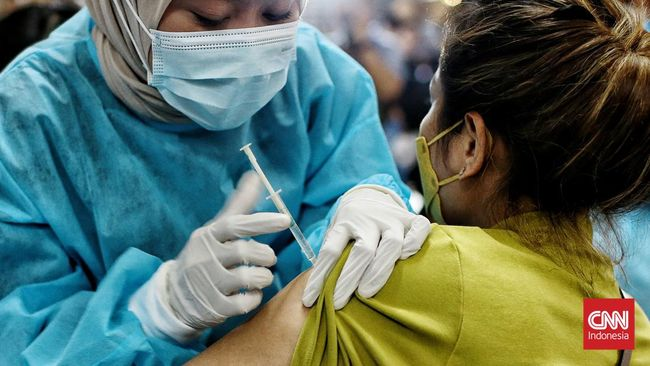

CNN Indonesia
Jumat, 08 April 2022
Peningkatan vaksin booster menjelang mudik Lebaran 2022 (CNN Indonesia/Andry Novelino)
Jakarta, CNN Indonesia -- Kementerian Kesehatan (Kemenkes) mencatat jumlah warga yang menerima vaksin virus corona (Covid-19) dosis lanjutan alias booster mengalami peningkatan signifikan jelang pelaksanaan mudik lebaran 2022.
Juru Bicara Vaksinasi Covid-19 dari Kemenkes Siti Nadia Tarmizi sekaligus memastikan persediaan atau stok vaksin booster di Indonesia masih aman tersedia hingga 1-2 bulan ke depan. Ia menyebut pemerintah telah mengamankan stok jauh-jauh hari, seiring dengan minat booster masyarakat yang semakin tinggi jelang mudik
"Kita lihat terjadi lumayan peningkatan yang tadinya sekitar 300-400 ribu sehari, sekarang penyuntikan sehari untuk dosis ketiga sekitar 700-760 ribu. Dan terutama di daerah-daerah di mana memang banyak asal pemudik yang kita lihat tren terjadi peningkatannya," kata Nadia dikutip dari kanal YouTube Setjen DPR RI Channel, Jumat (8/4).
Nadia kemudian merinci, capaian vaksinasi Indonesia per Jumat (8/4) Pukul 12.00 WIB, tercatat sebanyak 25.945.875 orang telah menerima suntikan booster. Dengan demikian, target vaksinasi booster pemerintah dari total sasaran 208.265.720 orang sudah menyentuh 12,46 persen.
Sekretaris Direktorat Jenderal Kesehatan Masyarakat Kemenkes ini sekaligus mengingatkan bahwa syarat booster mudik pada tujuannya adalah untuk memberikan proteksi tambahan bagi warga yang berniat pulang kampung guna menemui orang tua yang merupakan kelompok rentan terhadap penularan Covid-19.
Untuk itu, ia meminta agar masyarakat tidak lagi memperdebatkan booster sebagai syarat mudik. Ia meminta warga mematuhi aturan yang sudah ditetapkan pemerintah seiring dengan lampu hijau mudik, setelah dua tahun sebelumnya pemerintah melarang aktivitas pulang kampung saat lebaran itu.
"Jumlah yang akan melakukan mudik sangat besar. Dengan jumlah orang yang begitu besar, risiko daripada penularan itu akan terjadi peningkatan. Karena risikonya meningkat, makanya kita tambahkan juga proteksi kekebalan pada tubuh kita," ujarnya.